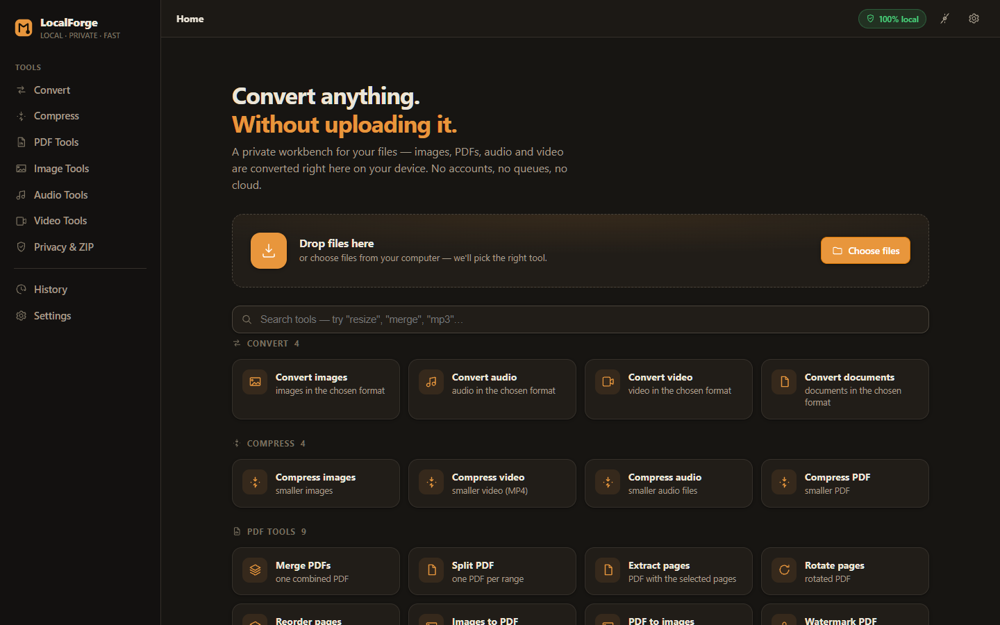

LocalForge.
A file workbench with no backend. Convert, compress and merge right in the tab — because nobody wants to upload their documents to a stranger's server to resize them.

The problem
Every "free online converter" is the same trade: you hand over a file, it goes somewhere, and you hope. For a PDF made of ID scans, a client contract or a folder of family photos, that's a bad deal — and the free tier usually caps you at two files before asking for a card anyway.
The browser can already do almost all of this work. Modern APIs decode images, manipulate PDFs and — with WebAssembly — transcode audio and video. So the scope became one sentence: a file tool where the file never leaves the device.
The build
A single-page app with no server logic at all. Files are read with the browser's File API, processed in memory (or an off-thread worker), and handed straight back as a download. Bundling the heavy pieces — the FFmpeg WebAssembly core, the PDF and ZIP libraries — as lazy chunks means the app stays small until you actually pick a tool.
- Convert — images, audio and video into the format you actually need, decoded and re-encoded in the tab.
- Compress — images, video, audio and PDF, with the file size visible before you commit.
- PDF tools — merge, split, extract, rotate, reorder, images-to-PDF, PDF-to-images, watermark and page numbers.
- Privacy tools — strip EXIF/GPS and document metadata, then ZIP the results in one go. The "clean up before sending" row that most converters forget.
- No accounts, no queue, no upload bar — there is literally no endpoint receiving your file. The privacy claim is a property of the architecture, not a promise in a footer.
What went wrong first
Doing everything on the main thread froze the page — decoding a video locked the UI so hard that even the progress bar stopped moving, which is the worst possible feedback loop. Moving the heavy work to a worker (and keeping the WASM core lazy) fixed it: the interface stays responsive while the tab quietly chews through the file.
The second miss was memory. Files processed in memory are comfortable until someone drops a 400 MB video on it, at which point the tab dies without explanation. Now sizes are checked up front and the app says no before the crash, instead of after.
What I learned
"No backend" isn't just cheaper — it's a feature you can prove. Every other tool on the list asks you to trust a privacy policy; this one can't leak a file it never receives. Designing around a hard constraint like that made the rest of the product simpler: no storage, no cleanup jobs, no data-retention page, nothing to secure server-side.
It also reset my sense of what a browser can do. WebAssembly turns the client into a real compute surface, and for a whole class of tools the server was only ever there out of habit.